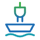
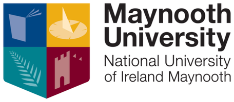
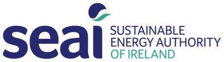
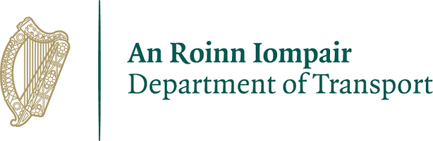

LinkedIn post
To add The first two or three sentences of the post, and its image if it has one.
Maynooth University · School of Business
We study how ships and ports can cut their emissions: where green shipping corridors can start, what fuels emit over their whole life cycle, which alternative fuels make sense, and how to bring shore side electricity to Irish ports. We work with ports, ferry operators and public agencies around the Irish Sea.
Glas is the Irish word for green, the green of the natural world. It is the green of féar glas, green grass, and of glasraí, vegetables. In older Irish writing, glas also described the changing colour of the sea, from silvery blue to deep green.
Today the same word names the green economy, geilleagar glas, and green fuel, breosla glas. GlasShip brings these together: the sea around Ireland, and the ships and ports moving to cleaner energy.
GLAS also spells out our four research themes.
We assess routes where zero-emission shipping can start first, such as Dublin–Holyhead, and support green corridor initiatives across the island of Ireland.
We compare the emissions of marine fuels over their whole life cycle, from production to use on board, and check how this evidence lines up with shipping's climate rules.
We assess the cost and readiness of biofuels, methanol, ammonia, hydrogen and electrofuels, and help Ireland prepare for FuelEU Maritime and the IMO Net-Zero Framework.
We study the costs and benefits of plugging ships into shore power, national roll-out ahead of the 2030 AFIR deadline, and renewable charging for ports.

Podcast · Research @ MU School of Business
with Dr Patrick Rigot-Müller · 21 Oct 2026 · 9 min
Shipping carries most of the world's trade, yet the industry is still unsure which fuels will power its future. Patrick explains how ship-tracking data, industry data and interviews with industry partners and policymakers show how shipping fleets operate.
Report · Marine Institute · 2025
Alternative fuels, infrastructure, and policy pathways
The report sets out how Ireland's maritime industry can reach carbon neutrality by 2050. It assesses alternative fuels, the port infrastructure they need, and the rules that drive the transition, and it proposes a phased roadmap.
The draft revision of Ireland's National Ports Policy highlights our work on green shipping corridors, onshore power supply and alternative marine fuels.
IMDO's annual review of Irish ports and shipping names Dublin–Holyhead as a leading candidate for a green shipping corridor, with methanol as a promising fuel, citing the 2025 feasibility study in which Maynooth University was the academic partner.
Methanol was found to be the most practical alternative fuel for the route, with up to 80% lower greenhouse gas emissions.
Two of the group's PhD researchers in maritime transport received Researcher of the Year awards from the Chartered Institute of Logistics and Transport (CILT) Ireland, in 2024 and 2025. Confirm Year for each award and a link.
A feasibility study led by Irish Ferries and Stena Line, funded through the International Green Corridor Fund.
To add The first two or three sentences of the post, and its image if it has one.
Updates from our projects, conferences and publications.
To add Link to the group's LinkedIn page
Host institution


Funders and partners



Other research funding
Project partners
Research
Our research supports the maritime industry's move to zero emissions. We combine cost modelling, life cycle assessment, stakeholder research and policy analysis, and we work closely with ports, operators and public agencies.
Where can zero-emission shipping start first?
What does a fuel emit over its whole life cycle?
Which fuels make sense, and at what cost?
What does it take to plug ships in at berth?
Confirm Funders and dates for the ongoing projects.
Doctoral research by Kamalakkannan Sivappirakasam on how green shipping corridors can be identified and set up, including a framework for pre-feasibility studies of corridors in Northern Europe.
Moving Forward with Technologies and Compliance Solutions
The Irish maritime industry has to navigate through a highly dynamic context surrounding environmental regulations. There are many uncertainties regarding the future fuels and solutions that will eventually be implemented at a large scale. Hence, the industry focuses on flexible solutions, which come at a cost that the industry has to bear.
At the EU level, the Fit-for-55 package has a direct impact on the shipping industry, with the revised Emissions Trading System Directive; the FuelEU Maritime Regulation, which puts in place progressively tighter emissions requirements on fuels; and the Alternative Fuel Infrastructure Regulation (AFIR), which from 2030 onwards imposes the use of onshore power supply (OPS) while at berth for container and passenger ships, unless they use a zero-emission technology at berth. At the international level, the IMO Net-Zero Framework was expected to be formally adopted in October 2025; that decision was postponed by one year.
In this project, we will address these and other challenges as follows
Sustainable Transport Through Renewable Energy And Maritime Transfer Services
The STREAM project focuses on localised, off-grid, renewable-powered charging stations. It will provide ports with essential knowledge and solutions, including optimal sizing and advanced control for microgrids, innovative charging concepts, international standardisation efforts, cybersecurity advancements, and diverse energy storage integration. STREAM also aims to develop advanced financial models and risk-sharing mechanisms to overcome investment barriers. This holistic approach enhances local energy autonomy, boosts national energy security, and accelerates the transition to a sustainable electrified maritime sector.
A Digital Platform for Maritime Emissions Analytics, Traffic Insights, to Support Policy, Compliance, and Sustainable Operations in the Maritime Industry
OceanTrail is a web application developed by Ashutosh Pathak with the support of MaynoothWorks, Maynooth University's incubator. It supports work package 3 (digital-based solutions for green port initiatives) and work package 6 (project communication) of Decarbonising Shipping and Green Ports.
With the Marine Institute, we developed pathways to guide the Irish maritime industry towards carbon neutrality by 2050. The work included stakeholder research and data analysis on potential green shipping corridors across the Irish Sea, and an assessment of the socio-economic impact of environmental policy, with a focus on alternative maritime fuels and onshore power supply.
A feasibility study for a green shipping corridor on the Dublin–Holyhead route, the busiest roll-on/roll-off route between Ireland and the UK. The study assessed low-carbon energy pathways, reviewed policy and regulation, and built a business case.
Doctoral research on how cleaner technologies can support green practices in Irish shipping. It produced cost assessments of alternative marine fuels and a cost–benefit assessment of shore-side electricity in Irish ports.
The government's draft revision of the National Ports Policy highlights our work on green shipping corridors, onshore power supply and alternative marine fuels. The work has been funded by the Marine Institute and the Sustainable Energy Authority of Ireland. Read the news story.
Publications
Peer-reviewed articles, reports, conference papers and theses from the group, newest first.
To addAny further publications from group members (BibTeX, ORCID or Google Scholar). Entries below come from Maynooth University staff profiles, MURAL and the Marine Institute Open Access Repository.
Journal article
Sivappirakasam, K., Rigot-Müller, P., & Coughlan, J. (2026). Marine fuel pathways for net-zero GHG shipping: A review of life cycle assessment evidence and policy alignment. Transportation Research Part E: Logistics and Transportation Review, 213, 104983.
Commentary
Rigot-Muller, P., Kovalenko, A., Sivappirakasam, K., & Raspotnik, A. (2026). The EU's Arctic Policy Consultation was a Success — But Not the One You Think. High North News.
To add Link to the article
Report
Rigot-Müller, P., Kovalenko, A., Sivappirakasam, K., & Coughlan, J. (2025). Transitioning Ireland's maritime sector to carbon neutrality: Alternative fuels, infrastructure, and policy pathways. Marine Institute Research for Policy Awards 2023. Marine Institute.
Journal article
Zaatar, T., Cheaitou, A., Faury, O., & Rigot-Muller, P. (2025). Arctic sea ice thickness prediction using machine learning: A long short-term memory model. Annals of Operations Research, 345.
Book chapter
Kavanagh, E., Kovalenko, A., & Rigot-Muller, P. (2025). Ireland in Arctic Research: A Growing Scientific Presence. In Arctic Yearbook 2025. Arctic Portal.
Conference paper
Sivappirakasam, K., Rigot-Muller, P., & Coughlan, J. (2025). Green Shipping Corridors potential in Northern Europe: A framework for pre-feasibility studies. International Association of Maritime Economists (IAME) Conference, Bergen, Norway, 24–27 June 2025.
Conference presentation
Kovalenko, A. (2025). The economic impact of FuelEU Maritime and the EU ETS, and the ports' perspective under the Alternative Fuels Infrastructure Regulation: the viability of onshore power supply and the implementation risks for investors. International Association of Maritime Economists (IAME) Conference, Bergen, Norway, 24–27 June 2025.
Confirm Exact title and co-authors
Conference presentation
Kovalenko, A., Sivappirakasam, K., Rigot-Muller, P., & Coughlan, J. (2025). Economic impact of EU emission initiatives for alternative fuel transition in the Irish maritime industry. SIGA2 Conference, Antwerp, 7–9 May 2025, and Irish Transport Research Network Conference, Trinity College Dublin, 28–29 May 2025.
Journal article
Fedi, L., Faury, O., Etienne, L., Cheaitou, A., & Rigot-Muller, P. (2024). Application of the IMO taxonomy on casualty investigation: Analysis of 20 years of marine accidents along the North-East Passage. Marine Policy, 162, 106061.
Journal article
Gore, K., Rigot-Muller, P., & Coughlan, J. (2023). Cost-benefit assessment of shore side electricity: An Irish perspective. Journal of Environmental Management, 326, 116755.
PhD thesis
Gore, K. (2023). Facilitating "green practices" within the Irish maritime industry from use of cleaner alternative technologies. PhD thesis, Maynooth University.
Journal article
Gore, K., Rigot-Muller, P., & Coughlan, J. (2022). Cost assessment of alternative fuels for maritime transportation in Ireland. Transportation Research Part D: Transport and Environment, 110, 103416.
Nothing listed in this category yet.
Team
Researchers at the Maynooth University School of Business working on the green shipping transition.
Group leader
Photo
Assistant Professor, Operations and Supply Chain · School of Business
Patrick coordinates the Sustainability and Climate Change research beacon in the School of Business. His research covers ports and maritime transport, alternative fuels, Arctic shipping and sustainable supply chains. He has led Marine Institute and SEAI-funded work on decarbonising Irish shipping and electrifying ports, and Maynooth's part in the Dublin–Holyhead green shipping corridor study. This work is highlighted in the 2026 draft revision of Ireland's National Ports Policy.
Before Maynooth he worked at Normandy Business School, Newcastle University and the University of Hull, where he joined the Low Carbon Shipping project. He holds a PhD in Industrial Engineering from Mines de Paris.
Confirm Role as group leader. Bio drafted from Patrick's Maynooth profile.
Current members
PhD Researcher · Green Shipping Corridors
Kamalakkannan works on life cycle assessment of marine fuels, green shipping corridors and the economic effects of EU emission rules on Irish shipping. He is lead author of a 2026 review in Transportation Research Part E on marine fuel pathways for net-zero shipping, and co-author of the group's 2025 Marine Institute report. He received a CILT Ireland Researcher of the Year award. To add Degrees and background.
Postdoctoral Research Fellow
Alina works with the Marine Institute on decarbonisation pathways for the Irish maritime industry. She coordinates the project, leads stakeholder research and analyses data on potential green shipping corridors across the Irish Sea. She holds a PhD in Business (transport economics and maritime logistics) from Nord University, where she was a PhD Research Fellow at the Centre for High North Logistics, and an MSc in Logistics from Molde University College. Her interests include ports and maritime logistics, sustainable shipping and Arctic shipping.
Professor and Head of School · School of Business
Joseph leads the School of Business at Maynooth University. His research covers management control systems, sustainability and business relationships. He is a co-author of the group's work on maritime decarbonisation, including cost assessments of alternative fuels and shore-side electricity in Ireland, the 2026 review of marine fuel pathways and the 2025 Marine Institute report. He holds a PhD from Warwick Business School and has supervised 17 PhD students.
Research Associate · OceanTrail
Ashutosh is a first-class honours graduate of Maynooth's MSc in Business Analytics. He is a research associate in the group and is developing the OceanTrail web application, with the support of MaynoothWorks, Maynooth University's incubator. He has carried out several projects with the Maynooth University School of Business, including an AI capability maturity model for the hospitality sector, a decision-support system for plastic recycling in Irish manufacturing, and a public sector sustainability toolkit for the Ireland West Strategic Development Zone. Ashutosh provides OceanTrail functionality as an in-kind contribution to the Decarbonising Shipping and Green Ports project, supporting work package 3 (digital-based solutions for green port initiatives) and work package 6 (project communication).
To add
For each further member: name and degrees, role and project, a bio of 80–200 words, a square photo, and links to Google Scholar, ORCID, ResearchGate or LinkedIn.
Past members
PhD Researcher · PhD awarded 2023
Ketan's PhD at Maynooth University examined how cleaner alternative technologies can support green practices in the Irish maritime industry, with cost assessments of alternative marine fuels and of shore-side electricity in Irish ports. He received a CILT Ireland Researcher of the Year award.
Now: Associate Researcher, marine team, International Council on Clean Transportation (ICCT)
To add
Other former researchers and students, with their role in the group and where they are now.
Contact
We welcome contact from industry, ports, public bodies and prospective students who share an interest in greener shipping.
Address
GlasShip: Green Shipping Transition Research Group53.381°N 6.592°W
Work with us
If you are interested in a PhD or postdoctoral position, or want to explore a joint project on maritime decarbonisation, please email the group with a short description of your interests.
Confirm Office location for the group, and whether to list open positions here.